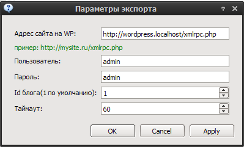
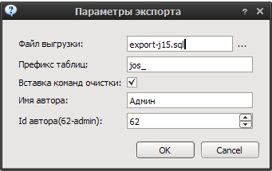

Экспорт¶
CMS Simple¶
Сохраняет HTML файл в формате CMS Simple с форматированием H1-8.
Экспортируемые поля:
- Заголовок
- Текст
WordPress XML¶
Выгружает XML в формате Wordpress Import.
Экспортируемые поля:
- Категории
- Теги
- Заголовок
- Дата публикации
- Текст
- Вступление(Excerpt)
Примечание
Для импорта в WordPress версии 3.* установите плагин wordpress-importer
WordPress XML-RPC(WP/metaWeblog)¶
Экспортирует категории/статьи по XML-PRC.
Поля для категорий:
- Заголовок
- Описание
Поля для статей:
- Заголовок
- Текст
- Дата публикации
- Теги
Примечание
Протестировать подключение вы можете кнопкой Apply.
Joomla 1.5¶
Выгрузка SQL файла в формате CMS Joomla 1.5
Создается секция “Статьи”. Далее в ней создаются категории.
Поля для категорий:
- Заголовок
- Описание
Поля для статей:
- Имя автора
- Заголовок
- Вступительный текст
- Текст
- Дата публикации
- Теги
При необходимости генерируется код очистки секций/категорий/статей.
Предупреждение
Это может повлечь за собой удаление всех существующих материалов сайта.
Datalife Engine 8¶
Выгрузка в SQL файла в форматах DLE 8.0/8.5.

Создается структура категории/статьи.
Поля для категорий:
- Заголовок
Поля для статей:
- Имя автора
- Дата публикации
- Заголовок
- Вступительный текст
- Текст
- Теги
При необходимости генерируется код очистки секций/категорий/статей.
Предупреждение
Это может повлечь за собой удаление всех существующих материалов сайта.
Zebrum Lite¶
Выгрузка в формате parser.php Zebrum Lite 2.0.3

Поля для категорий:
- Заголовок
- Дата публикации
Поля для статей:
- Заголовок
- Дата публикации
- Вступительный текст
- Текст
- Теги
Статичный сайт¶
Генерация статичного сайта. Подходит для размещения на хостингах без поддержки php(narod.ru).

Создается структура каталогов содержащих HTML файлы по заданному шаблону. Поддерживаются метки:
- Заголовок
- Меню
- Содержимое
- Случайные статьи
Примечание
Если вы получаете ошибку о невозможности создания файла на локальном диске, сократите вложенность каталогов, так как файловая система OS имеет ограничение на длину пути в 255 символов.
Livejournal.com¶
Выгрузка статей на сервис livejournal.com.

Экспортируемые поля:
- Заголовок
- Текст
- Дата публикации
- Теги
Предупреждение
При небольшом времени задержки между публикациями возможны санкции со стороны сервиса(блокирование доступа).
Примечание
Протестировать подключение вы можете кнопкой Apply.
Blogger.com¶
Выгрузка статей на сервис blogspot.com

Экспортируемые поля:
- Заголовок
- Текст
- Дата публикации
- Теги
Предупреждение
При небольшом времени задержки между публикациями возможны санкции со стороны сервиса(блокирование доступа).
Примечание
Протестировать подключение вы можете кнопкой Apply.
Content Monster 2 XML-PRC¶
Выгрузка статей по XML-RPC.
Вызываемые функции:
| Функция | Действие | Параметры |
|---|---|---|
| check_connection | Проверка подключения | Входные:
Выходные:
|
| new_article | Добавление статьи | Входные:
Выходные:
|
Пример сервера.
#!/usr/bin/env python
# -*- coding: UTF-8 -*-
__author__ = "snoa"
from SimpleXMLRPCServer import SimpleXMLRPCServer
import xmlrpclib
import logging
log = logging.getLogger(__name__)
def new_article(parent, title, text, tags, pubdate):
log.debug("""NEW ARTICLE
title: %s
parent: %s
textlen: %i
tags: %i
pubdate: %s
""", title, parent, len(text), len(tags), pubdate)
return True
def check_connection():
return True
server = SimpleXMLRPCServer(("localhost", 8000))
log.debug("Listening on port 8000...")
server.register_function(check_connection)
server.register_function(new_article)
server.serve_forever()
Примечание
Протестировать подключение вы можете кнопкой Apply.
Экспорт текстовых файлов¶
Выгрузка статей в указанный каталог
Публикация материалов в UCOZ¶
Выгрузка статей в указанную категорию новостей

Для побликации в другие компоненты смотрите исходный код.

Предупреждение
При публикации большого количества материалов возможны санкции.
Примечание
- На сайте должен активирован модуль “новости сайта” и туда добавлена категория.(thx Dendroid)
- На сайте после авторизации долна быть доступна страница “/news/0-0-0-0-1”
Экспорт в MaxSite CMS¶
Выгрузка в формат демонстрационных данных: demo.sql
Экспорт в Datalife Engine 9.0¶
Выгрузка в DLE 9.0 SQL
Примечание
Если вы используете базу в cp1251, то для импорта sql-файла используйте mysql с параметром –default-character-set utf8. Вот примерно так: mysql –default-character-set utf8 -b dle9 <dle90.sql
- Экспорт
- Выгрузка статей в различны форматы и CMS